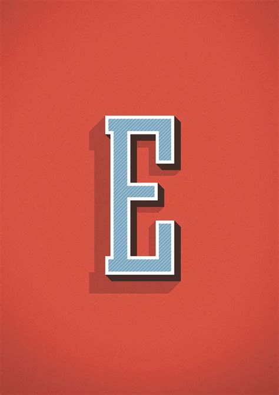
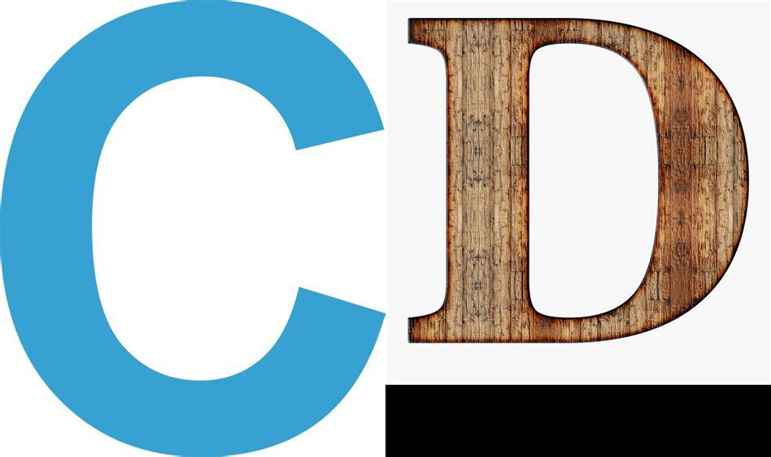
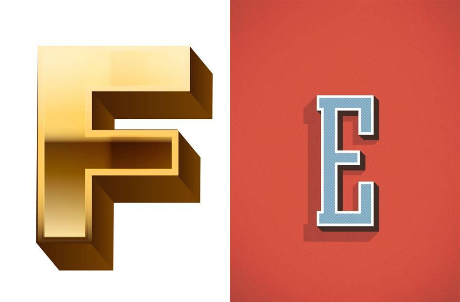

list.files("data/join_photos_randomly/in/")[1] "A.jpg" "B.jpg" "C.jpg" "D.jpg" "E.jpg" "F.jpg"This python script was written to support a team who needed paired photos to be shown side by side, but with randomisation of which photo went on the left and which on the right in each pair.
The inputs are (1) a folder in of image files with unique names
list.files("data/join_photos_randomly/in/")[1] "A.jpg" "B.jpg" "C.jpg" "D.jpg" "E.jpg" "F.jpg"

and (2) a file photo_pairs_in.csv which lists the pairs and provides a subject identifier.
library(tidyverse)
df<-read_csv("data/join_photos_randomly/photo_pairs_in.csv")
(df)# A tibble: 3 × 3
subject prewash postwash
<dbl> <chr> <chr>
1 1 A.jpg B.jpg
2 2 C.jpg D.jpg
3 3 E.jpg F.jpg Create a new text document (photo_joiner.py) and save to the same folder as the input csv file.
##################################################################
# PHOTO JOINER WITH RANDOMISER
# This script takes a list of paired photos and joins them
# Joining is side by side
# and randomised
# The script creates a new joined image file in the out folder
# and also records which image was on the left, which on the right
#
# Core code is copyright Chrissy h Roberts
# Chrissy.Roberts@LSHTM.ac.uk
# CC-BY 4.0 (https://creativecommons.org/licenses/by/4.0/)
#
# Imported libraries are used according to their individual licenses
# Pillow library used under License: Historical Permission Notice and Disclaimer (HPND) (HPND)
# Pillow written by Jeffrey A. Clark (Alex)
##################################################################
# Import libraries needed for this analysis
import os
import random
import csv
from PIL import Image
# Input directory containing your photo pairs
input_dir = "in"
# Output directory for saving the joined images
output_dir = "out"
# Input CSV file containing subject and photo filenames
input_csv_file = "photo_pairs_in.csv"
# Output CSV file for logging
output_csv_file = "photo_pairs_out.csv"
# Set the random seed for reproducible randomness
random_seed = 42 # You can change this seed to any integer you prefer
random.seed(random_seed)
# Create a dictionary to map subjects to photo pairs
subject_to_photos = {}
# Read the input CSV file and populate the dictionary
with open(input_csv_file, "r") as csv_file:
csv_reader = csv.DictReader(csv_file)
for row in csv_reader:
subject = row["subject"]
prewash_photo = row["prewash"]
postwash_photo = row["postwash"]
subject_to_photos[subject] = (prewash_photo, postwash_photo)
# Create a new CSV file for logging with "left" and "right" columns
csv_file = open(output_csv_file, "w", newline="")
csv_writer = csv.writer(csv_file)
csv_writer.writerow(["subject", "left", "right"])
# Process and rename the photos for each subject
for subject, (prewash_photo, postwash_photo) in subject_to_photos.items():
# Randomly assign which photo is on the left and which is on the right
if random.choice([True, False]):
left_photo, right_photo = prewash_photo, postwash_photo
else:
left_photo, right_photo = postwash_photo, prewash_photo
# Load the left and right photos using PIL
left_image = Image.open(os.path.join(input_dir, left_photo))
right_image = Image.open(os.path.join(input_dir, right_photo))
# Concatenate the photos horizontally
joined_image = Image.new("RGB", (left_image.width + right_image.width, left_image.height))
joined_image.paste(left_image, (0, 0))
joined_image.paste(right_image, (left_image.width, 0))
# Save the joined photo in the output directory
joined_photo_filename = f"{subject}.jpg"
joined_image.save(os.path.join(output_dir, joined_photo_filename))
# Write the new mapping to the output CSV file
csv_writer.writerow([subject, left_photo, right_photo])
print(f"Processed subject {subject}: {left_photo} + {right_photo} => {joined_photo_filename}")
# Close the output CSV file
csv_file.close()To run this script, open a terminal, change directory to the folder and type python3 photo_joiner.py
The outputs are saved in a folder (out) in the form of the joined photos


Note that no correction is made for the sizes, so some clipping will occur if the larger photo is on the right. We recommend using photos that have a consistent size.
The data on which photos were on the left or right is stored in the photo_pairs_out.csv file.
library(tidyverse)
df<-read_csv("data/join_photos_randomly/photo_pairs_out.csv")
(df)# A tibble: 3 × 3
subject left right
<dbl> <chr> <chr>
1 1 A.jpg B.jpg
2 2 C.jpg D.jpg
3 3 F.jpg E.jpg